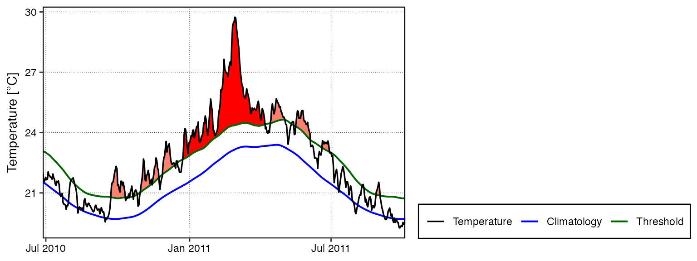
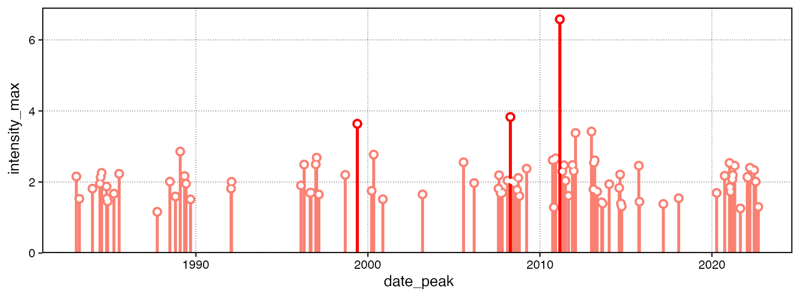
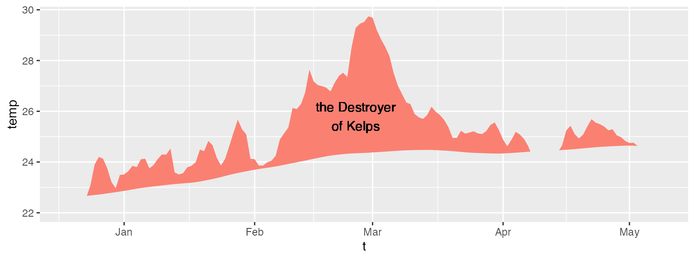
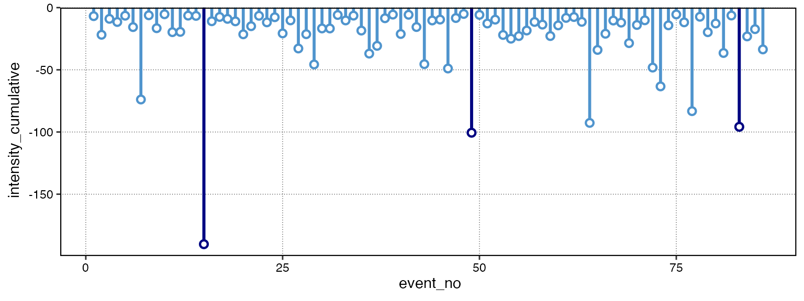
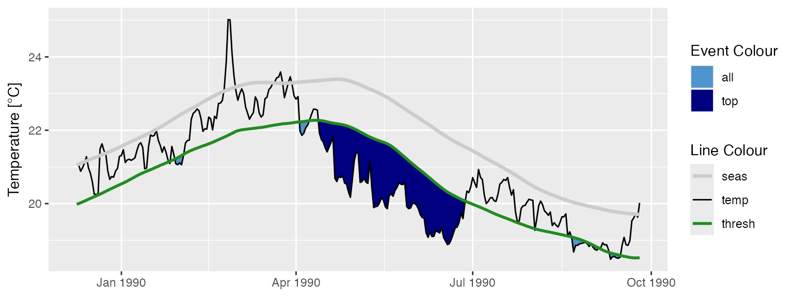

Detection and Visualisation of Events
AJ Smit and Robert W Schlegel
2018-12-20
Source:vignettes/detection_and_visualisation.Rmd
detection_and_visualisation.RmdData
The detect_event() function is the core of this package, and it expects to be fed the output of the second core function, ts2clm(). By default, ts2clm() wants to receive a two-column dataframe with one column labelled t containing all of the date values, and a second column temp containing all of the temperature values. Please note that the date format it expects is “YYYY-MM-DD”. For example, please see the top five rows of one of the datasets included with the heatwaveR package:
head(heatwaveR::sst_WA)## t temp
## 1 1982-01-01 20.94
## 2 1982-01-02 21.25
## 3 1982-01-03 21.38
## 4 1982-01-04 21.16
## 5 1982-01-05 21.26
## 6 1982-01-06 21.61It is possible to use different column names other than t and temp with which to calculate events. Please see the help files for ts2clm() or detect_event() for a thorough explanation of how to do so.
Loading ones data from a .csv file or other text based format is the easiest approach for the calculation of events, assuming one is not working with gridded data (e.g. NetCDF). Please see this vignette for a detailed walkthrough on using the functions in this package with gridded data.
Calculating marine heatwaves (MHWs)
Here are the ts2clm() and detect_event() function applied to the Western Australia test data included with this package (sst_WA), which are also discussed by Hobday et al. (2016):
# Load libraries
library(heatwaveR)
library(dplyr)
# Detect the events in a time series
ts <- ts2clm(sst_WA, climatologyPeriod = c("1982-01-01", "2011-12-31"))
mhw <- detect_event(ts)
# View just a few metrics
mhw$event %>%
dplyr::ungroup() %>%
dplyr::select(event_no, duration, date_start, date_peak, intensity_max, intensity_cumulative) %>%
dplyr::arrange(-intensity_max) %>%
head(5)## # A tibble: 5 x 6
## event_no duration date_start date_peak intensity_max intensity_cumulati…
## <dbl> <dbl> <date> <date> <dbl> <dbl>
## 1 52 105 2010-12-24 2011-02-28 6.58 293.
## 2 41 35 2008-03-25 2008-04-14 3.83 79.3
## 3 29 95 1999-05-13 1999-05-22 3.64 240.
## 4 60 14 2012-12-27 2012-12-31 3.42 32.3
## 5 59 101 2012-01-10 2012-01-27 3.38 214.Visualising marine heatwaves (MHWs)
Default MHW visuals
One may use event_line() and lolli_plot() directly on the output of detect_event() in order to visualise MHWs. Here are the functions being used to visualise the massive Western Australian heatwave of 2011:
event_line(mhw, spread = 180, metric = "intensity_max",
start_date = "1982-01-01", end_date = "2014-12-31")
lolli_plot(mhw, metric = "intensity_max")
Custom MHW visuals
The event_line() and lolli_plot() functions were designed to work directly on the list returned by detect_event(). If more control over the figures is required, it may be useful to create them in ggplot2 by stacking geoms. We specifically created two new ggplot2 geoms to reproduce the functionality of event_line() and lolli_plot(). These functions are more general in their functionality and can be used outside of the heatwaveR package, too. To apply them to MHWs and MCSs first requires that we access the climatology or event dataframes within the list that is produced by detect_event(). Here is how:
# Select the region of the time series of interest
mhw2 <- mhw$climatology %>%
slice(10580:10720)
ggplot(mhw2, aes(x = t, y = temp, y2 = thresh)) +
geom_flame() +
geom_text(aes(x = as.Date("2011-02-25"), y = 25.8, label = "the Destroyer\nof Kelps"))
ggplot(mhw$event, aes(x = date_start, y = intensity_max)) +
geom_lolli(colour = "salmon", colour_n = "red", n = 3) +
geom_text(colour = "black", aes(x = as.Date("2006-08-01"), y = 5,
label = "The marine heatwaves\nTend to be left skewed in a\nGiven time series")) +
labs(y = expression(paste("Max. intensity [", degree, "C]")), x = NULL)
Spicy MHW visuals
The default output of these function may not be to your liking. If so, not to worry. As ggplot2 geoms, they are highly malleable. For example, if we were to choose to reproduce the format of the MHWs as seen in Hobday et al. (2016), the code would look something like this:
# It is necessary to give geom_flame() at least one row on either side of
# the event in order to calculate the polygon corners smoothly
mhw_top <- mhw2 %>%
slice(49:110)
ggplot(data = mhw2, aes(x = t)) +
geom_flame(aes(y = temp, y2 = thresh, fill = "all"), show.legend = T) +
geom_flame(data = mhw_top, aes(y = temp, y2 = thresh, fill = "top"), show.legend = T) +
geom_line(aes(y = temp, colour = "temp")) +
geom_line(aes(y = thresh, colour = "thresh"), size = 1.0) +
geom_line(aes(y = seas, colour = "seas"), size = 1.2) +
scale_colour_manual(name = "Line Colour",
values = c("temp" = "black", "thresh" = "forestgreen", "seas" = "grey80")) +
scale_fill_manual(name = "Event Colour", values = c("all" = "salmon", "top" = "red")) +
scale_x_date(date_labels = "%b %Y") +
guides(colour = guide_legend(override.aes = list(fill = NA))) +
labs(y = expression(paste("Temperature [", degree, "C]")), x = NULL)
Should we not wish to highlight any events with geom_lolli(), plot them with a colour other than the default, and use a different theme, it would look like this:
ggplot(mhw$event, aes(x = date_peak, y = intensity_max)) +
geom_lolli(colour = "firebrick") +
labs(x = "Peak Date",
y = expression(paste("Max. intensity [", degree, "C]")), x = NULL) +
theme_linedraw()
Because these are simple ggplot2 geoms possibilities are nearly infinite.
Calculating marine cold-spells (MCSs)
The calculation and visualisation of cold-spells is also provided for within this package. The data to be fed into the functions is the same as for MHWs. The main difference is that one is now calculating the 10th percentile threshold, rather than the 90th percentile threshold. Here are the top five cold-spells (cumulative intensity) detected in the OISST data for Western Australia:
# First calculate the cold-spells
ts_10th <- ts2clm(sst_WA, climatologyPeriod = c("1982-01-01", "2011-12-31"), pctile = 10)
mcs <- detect_event(ts_10th, coldSpells = TRUE)
# Then look at the top few events
mcs$event %>%
dplyr::ungroup() %>%
dplyr::select(event_no, duration, date_start,
date_peak, intensity_mean, intensity_max, intensity_cumulative) %>%
dplyr::arrange(intensity_cumulative) %>%
head(5)## # A tibble: 5 x 7
## event_no duration date_start date_peak intensity_mean intensity_max
## <dbl> <dbl> <date> <date> <dbl> <dbl>
## 1 15 76 1990-04-13 1990-05-11 -2.50 -3.19
## 2 49 58 2003-12-19 2004-01-23 -1.73 -2.59
## 3 64 52 2014-04-14 2014-05-05 -1.78 -2.54
## 4 7 37 1986-06-24 1986-07-17 -2.00 -2.91
## 5 46 32 2003-09-08 2003-09-16 -1.53 -2.09
## # ... with 1 more variable: intensity_cumulative <dbl>Visualising marine cold-spells (MCSs)
Default MCS visuals
The default plots showing cold-spells look like this:
event_line(mcs, spread = 200, metric = "intensity_cumulative",
start_date = "1982-01-01", end_date = "2014-12-31")
lolli_plot(mcs, metric = "intensity_cumulative", xaxis = "event_no")
Note that one does not need to specify that MCSs are to be visualised, the functions are able to understand this on their own.
Custom MCS visuals
Cold spell figures may be created as geoms in ggplot2, too:
# Select the region of the time series of interest
mcs2 <- mcs$climatology %>%
slice(2900:3190)
# Note that one must specify a colour other than the default 'salmon'
ggplot(mcs2, aes(x = t, y = thresh, y2 = temp)) +
geom_flame(fill = "steelblue3")
ggplot(mcs$event, aes(x = date_start, y = intensity_max)) +
geom_lolli(colour = "steelblue3", colour_n = "navy", n = 3) +
labs(x = "Start Date",
y = expression(paste("Max. intensity [", degree, "C]")))
Minty MCS visuals
Again, because geom_flame() and geom_lolli() are simple ggplot2 geoms, one can go completely bananas with them:
mcs_top <- mcs2 %>%
slice(125:202)
ggplot(data = mcs2, aes(x = t)) +
geom_flame(aes(y = thresh, y2 = temp, fill = "all"), show.legend = T) +
geom_flame(data = mcs_top, aes(y = thresh, y2 = temp, fill = "top"), show.legend = T) +
geom_line(aes(y = temp, colour = "temp")) +
geom_line(aes(y = thresh, colour = "thresh"), size = 1.0) +
geom_line(aes(y = seas, colour = "seas"), size = 1.2) +
scale_colour_manual(name = "Line Colour",
values = c("temp" = "black", "thresh" = "forestgreen", "seas" = "grey80")) +
scale_fill_manual(name = "Event Colour", values = c("all" = "steelblue3", "top" = "navy")) +
scale_x_date(date_labels = "%b %Y") +
guides(colour = guide_legend(override.aes = list(fill = NA))) +
labs(y = expression(paste("Temperature [", degree, "C]")), x = NULL)
ggplot(mcs$event, aes(x = date_start, y = intensity_cumulative)) +
geom_lolli(colour = "steelblue3", colour_n = "navy", n = 7) +
labs( x = "Start Date", y = expression(paste("Cumulative intensity [days x ", degree, "C]")))